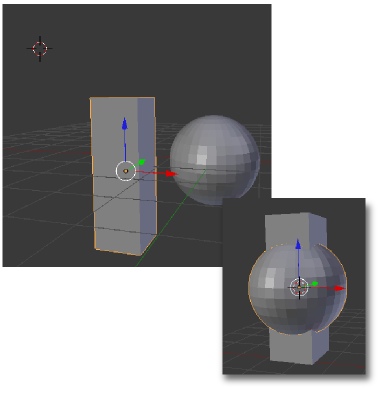

Recolocar el Origen
Este es un buen momento para profundizar más en el Origen de una malla.
Cuando trabajamos en Modo Objeto  el Origen se ve afectado por las transformaciones y parece unido físicamente a la estructura de la malla. Sin embargo en Modo Edición
el Origen se ve afectado por las transformaciones y parece unido físicamente a la estructura de la malla. Sin embargo en Modo Edición  esto no ocurre, es como si el Origen quedara anclado y fuera inmune a los cambios geométricos que se producen. Esto hace que a veces se descuelguen el uno del otro.
esto no ocurre, es como si el Origen quedara anclado y fuera inmune a los cambios geométricos que se producen. Esto hace que a veces se descuelguen el uno del otro.
Eso no es malo siempre que seamos nosotros los que lo decidamos. Pensemos que ahora podríamos rotar desde Modo Objeto  y usar ese punto como Centro de pivotaje. Sin embargo, por norma general, lo conveniente es que el Origen ocupe un lugar más lógico. Para ayudarnos en su recolocación Blender nos ofrece un apartado en las Herramientas ("T") que sólo podremos ver en Modo Objeto
y usar ese punto como Centro de pivotaje. Sin embargo, por norma general, lo conveniente es que el Origen ocupe un lugar más lógico. Para ayudarnos en su recolocación Blender nos ofrece un apartado en las Herramientas ("T") que sólo podremos ver en Modo Objeto  .
.
- Geometría a origen. El objeto se desplaza y el Origen permanece en el lugar.
- Origen a geometría. En esta ocasión es el Origen el que se desplaza para que la malla no se tenga que mover.
- Origen al cursor 3D. Aquí juega un papel trascendental el Cursor 3D porque el Origen se desplaza a donde esté. La malla no se mueve.
¿Eres capaz de conseguir alinear verticalmente estos dos objetos, para luego desplazarlos juntos garantizando esa propiedad?
